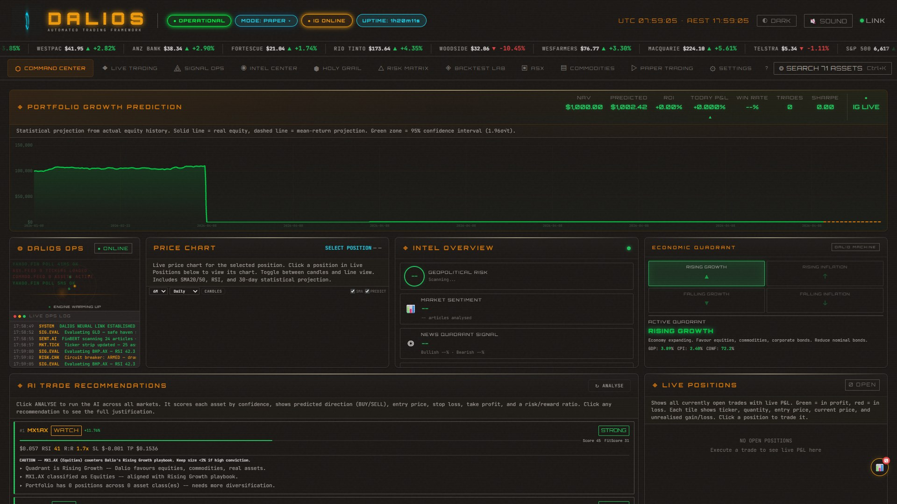
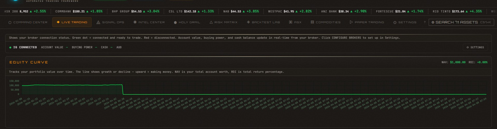
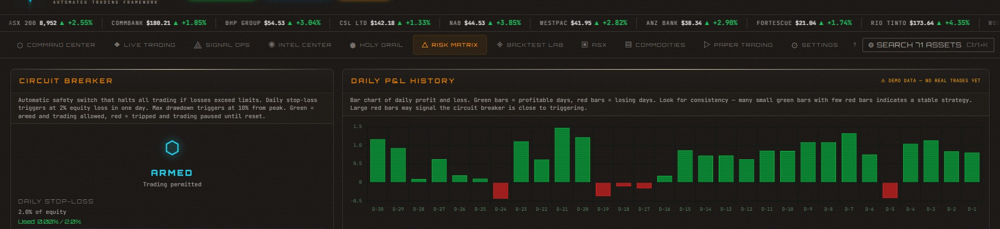
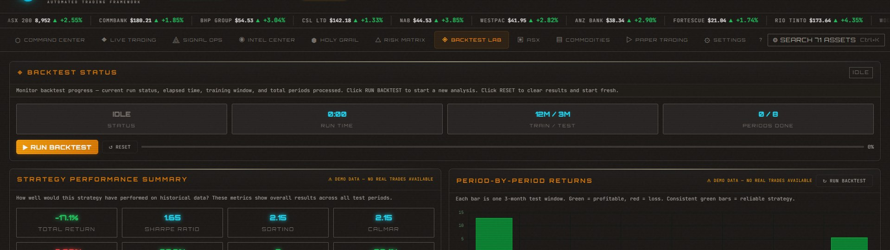
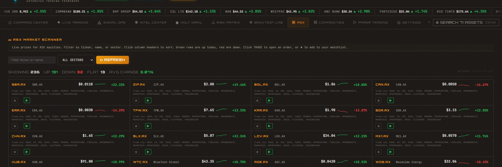
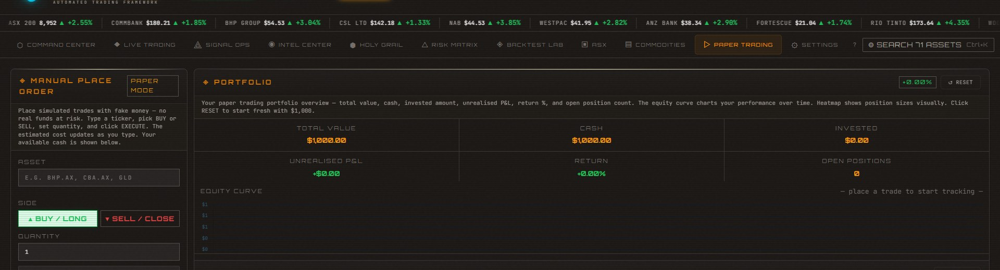
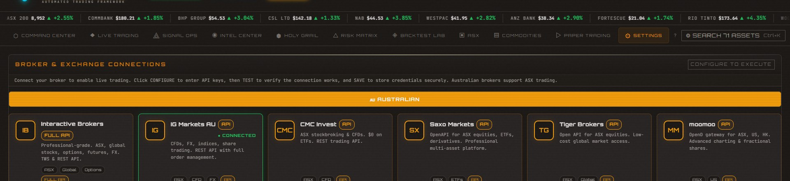

Every Module, Every Detail
Real screenshots from the running DALIOS terminal. Not mockups — this is the actual tool.
Command Center
Your mission control. Portfolio growth prediction with statistical projection, live price charts for any position, intel overview with geopolitical risk and market sentiment, Dalio economic quadrant display, AI trade recommendations, live positions, recent trade history, and real-time activity feed.

Live Trading
Connect your broker and trade with real money. Equity curve tracking with NAV and ROI, full portfolio breakdown (total value, cash, invested, unrealised P&L, buying power), open positions table with live prices, and signal quick-trade for one-click AI execution.

Signal Ops
AI-generated trade signals ranked by confidence. Filter by signal type, market, and minimum confidence. Each signal card shows entry price, stop loss, take profit, risk/reward ratio, RSI, trend direction, position size, and a full Dalio justification. New opportunities panel shows emerging setups before they become full signals.

Intel Center
FinBERT-powered intelligence from 50+ news sources (AFR, ABC, SMH, Bloomberg, Reuters, CNBC, BBC, WSJ, and more). Geopolitical risk monitor scans for conflict keywords (AUKUS, sanctions, trade war, Taiwan). Sentiment distribution doughnut chart and quadrant-by-quadrant breakdown. Every article scored bullish, bearish, or neutral in real-time.

Holy Grail
Dalio's Holy Grail of investing: hold 15+ uncorrelated assets with correlation below 0.3 to dramatically reduce risk. Live correlation matrix heatmap (green = independent, red = correlated), diversification threshold compliance meter, mean and max correlation stats, and Riskfolio-Lib optimized portfolio weights by quadrant fit.

Risk Matrix
Circuit breaker system with daily stop-loss and max drawdown limits. Daily P&L history chart (green = profitable, red = loss). Open positions risk view showing size %, unrealised P&L, and risk status. Full risk metrics: Sharpe ratio, Sortino ratio, max drawdown, win rate, total return, and portfolio value.

Backtest Lab
Walk-forward optimization: 12 months of training, then 3 months of out-of-sample testing, repeated across 8 rolling windows. Strategy performance summary with total return, Sharpe, Sortino, Calmar, max drawdown, win rate, and annualized return. Period-by-period bar chart and detailed breakdown table.

ASX Scanner
Full ASX equities scanner with 71+ tracked assets. Real-time prices, percentage changes, volume indicators, and one-click trade execution for every stock.

Commodities
Track 66+ commodities — heating oil, crude oil (WTI & Brent), gasoline, coal, silver, gold, palladium, platinum, cocoa, natural gas, lithium, rare earths, and more. Filter by ticker or name, see up/down/flat counts, and trade any commodity with one click.

Paper Trading
Risk-free simulated trading. Manual order placement (buy/long, sell/close) with estimated cost preview. Full portfolio tracking, equity curve, open positions with live P&L. Signal quick-trade lets you execute AI signals with one click. Complete trade history with CSV export.

Settings
15+ Australian and international broker connections: Interactive Brokers, IG Markets, CMC Invest, Saxo, Tiger, moomoo, Pepperstone, FinClear, Open Markets, Marketech, OpenTrader, IRESS, COG, FlexTrade, TradingView, and EODHD. General trading config (starting cash, risk limits), UI display options, and a guided tour.
